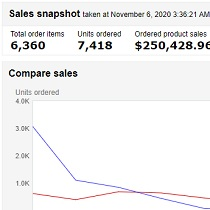
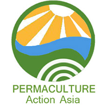

This is what makes me happy
-

I help individuals build life-changing location independent online businesses on the platform that has the most traffic in the world. I have worked with Payoneer’s South East Asia, Bangladesh, Pakistan, Sri Lanka, Philippines Regional Hub to teach their clients. A couple of my students have built Amazon FBA businesses that do more than US$1.8m in annual sales.
-

I coach poker. I specialise in live poker tournaments. As a semi-professional poker player, I have won more than AU$240,000 at The Star over two and a bit years immediately before the pandemic.
-
I’m currently working on Zensiti, an ecommerce startup that'll transform homes into smarter, greener spaces. I graduated from Founder Institute. 🤔 I’m looking for a tech co-founder!
-
I have been doing the Brazilian martial art, Capoeira, for 24 years. This is me! I believe I can fly! We (my instructors and I) teach at 5 orphanages in the Philippines and my new academy is in Chatswood, NSW.
-

I am a permaculturist. I set up a NGO in Philippines to teach permaculture and I wrote a successful $24,000 grant application that Rotary International funded and my Rotary club, the Rotary Club of Cebu, implemented. We built a demo farm in Minglanilla in Cebu province, and put the nearby farmers through a permaculture course.
-
I am learning to code! I am looking for an experienced developer as a mentor, would love to return the favour with coaching in my areas of expertise or equity in Zensiti. Here is my work.
-
I live in Sydney. I grew up in Papua New Guinea & Australia, lived in sunny Cebu city in Philippines for 12 years, and a year each in Thailand (@ a boxing camp) & Brazil, where I started learning Capoeira.